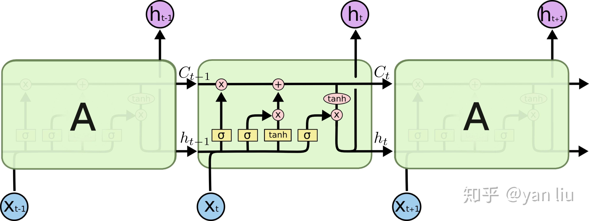
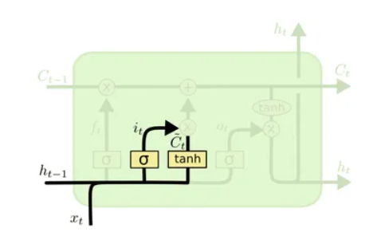

LSTM(Long Short Term Memory)
一、RNN
全拼 Recurrent Neural Networks.
当前节点受到前面节点的隐节点影响。
RNN的数学表达式可以表示为：
h t = σ ( x t ∗ w x t + h t − 1 ∗ w h t + b ) h_t =\sigma(x_t * w_{xt}+h_{t-1} *w_{ht}+b)
h t = σ ( x t ∗ w x t + h t − 1 ∗ w h t + b )
RNN单元：
长期依赖（Long Term Dependencies)：
1 2 3 4 5 6 eg1: The cat, which already ate a bunch of food, was full. | | | | | | | | | | | t0 t1 t2 t3 t4 t5 t6 t7 t8 t9 t10 eg2: The cats, which already ate a bunch of food, were full. | | | | | | | | | | | t0 t1 t2 t3 t4 t5 t6 t7 t8 t9 t10
假如我们想要预测full前面的动词形态，我们需要去分析 t1 的单复数，然而 t1 距离 t10 之间的距离太远，RNN 丧失了学习接收间隔太远信息的能力。
二、LSTM
具有长短期记忆的能力的神经网络。
之所以能够解决RNN的长期依赖问题，因为LSTM 引入了 “门(gate)”的概念，用门来控制特征的流通和损失。是由一系列LSTM单元（LSTM unit)组成，链式结构如下：

LSTM的核心部分如下图最上面的类似传送带的部分(C 1 , . . . C t − 1 , C t C_1,...C_{t-1},C_{t} C 1 , . . . C t − 1 , C t
其中
C t = f t ∗ C t − 1 + i t ∗ C t ~ C_t = f_t*C_{t-1}+i_t*\tilde{C_t}
C t = f t ∗ C t − 1 + i t ∗ C t ~
如下图，f t f_t f t C t − 1 C_{t-1} C t − 1 C t C_t C t f t f_t f t
f t = σ ( W f ⋅ [ h t − 1 , x t ] + b f ) f_t = \sigma(W_f\cdot[h_{t-1},x_t]+b_f)
f t = σ ( W f ⋅ [ h t − 1 , x t ] + b f )
如下图，C ~ \tilde{C} C ~ x t x_t x t h t − 1 h_{t-1} h t − 1 i t i_t i t f t f_t f t
i t = σ ( W i ⋅ [ h t − 1 , x t ] + b i ) C ~ = t a n h ( W C ⋅ [ h t − 1 , x t ] + b C ) i_t = \sigma(W_i \cdot [h_{t-1},x_t]+b_i) \\
\tilde {C} = tanh(W_C \cdot [h_{t-1},x_t]+b_C)
i t = σ ( W i ⋅ [ h t − 1 , x t ] + b i ) C ~ = t a n h ( W C ⋅ [ h t − 1 , x t ] + b C )

如下图，计算当前节点传送给下一个节点的隐节点的输出h t h_t h t
o t = σ ( W o ⋅ [ h t − 1 , x t ] + b o ) h t = o t ⋅ t a n h ( C t ) o_t = \sigma(W_o \cdot [h_{t-1},x_t]+b_o) \\
h_t = o_t \cdot tanh(C_t)
o t = σ ( W o ⋅ [ h t − 1 , x t ] + b o ) h t = o t ⋅ t a n h ( C t )